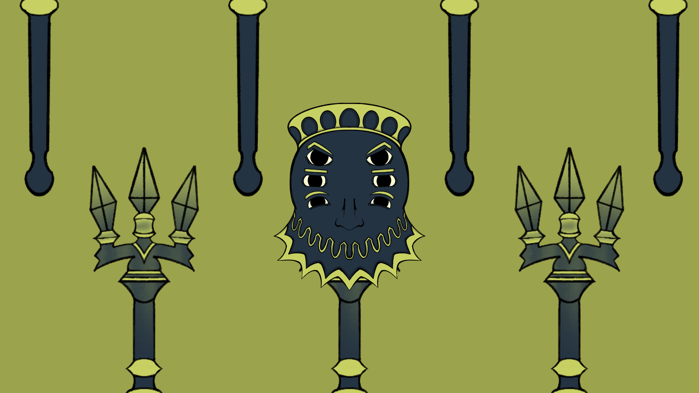

JOSÉ
MANUEL.
Programo. Dibujo.
Compongo.
Creo videojuegos desde tres frentes:
su lógica, su identidad visual y su música.
Proyectos
Qué hicimos, cómo funciona
y qué aporté yo.
Un equipo.
Un plazo.
Un juego.
Descubre mis game jams

Dar forma
a una idea.
Del dibujo al volumen: una mirada
a mi trabajo en arte 2D y 3D.
Ilustración & arte digital
Personajes, mundos e ideas propias. Del primer trazo al último fotograma.
Explorar mi arte 2D ↗Modelado & escenas
Otra dimensión para mis ideas. Selección de obras próximamente.
Galería 3D · Próximamente
Ponerle
sonido.
Composiciones para dar ritmo al juego
y acompañar lo que ocurre en pantalla.
Legado de Sangre
Composición para videojuego · Survival horror
Dar la nota
Composición para game jam · GameJam 8 de Game Scholars
Una idea.
Varias formas
de darle vida.
Soy Jose Manuel Pastor González. Estudio el doble grado en Diseño y Desarrollo de Videojuegos e Ingeniería de Computadores en la Universidad Rey Juan Carlos.
En mis proyectos he pasado del comportamiento de los enemigos a la ilustración y la banda sonora. Trabajar en esas tres áreas me ayuda a conectar las decisiones técnicas con lo que el jugador ve, escucha y hace. Me gusta construir en equipo y entender cómo encaja mi aportación en el conjunto.